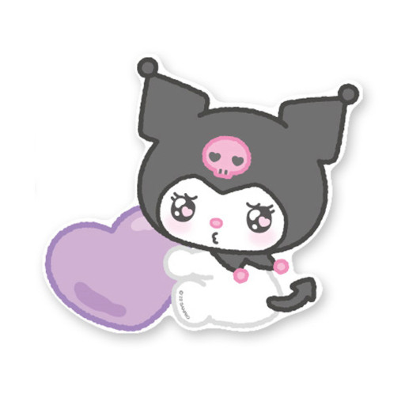

Ji Seomun
ABOUT ME
숙명여자대학교 소프트웨어학부 데이터사이언스전공 23
- 나이: 23 (만 21)
- 파트: 백엔드
- 올해 멋사에서 얻어가고 싶은 것 : 여러 해커톤을 나가보면서 경험을 쌓고 동아리 활동을 하며 좋은 사람들과 추억을 쌓는 것
MY STUDY
관심 언어: JavaScript
공부중인 것: JavaScript
관심 분야: 백엔드 개발, spring boot
저는 사용자가 프로그램을 사용하면서 불편함을 겪지 않도록 프로그램에 오류가 발생하지 않도록 프로그램을 개발하는 백엔드 개발자가 되고 싶습니다. 🦁
MY FAVORITE
좋아하는 색: Pink
좋아하는 음식: 마라탕, 닭발, 말차 등등
좋아하는 캐릭터: 쿠로미
Go Github ->